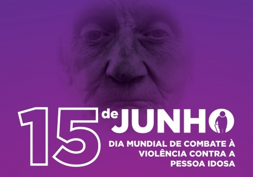

15 de Junho
Dia Mundial da Conscientização da Violência Contra os Idosos
O Dia Mundial da Conscientização da Violência Contra a Pessoa Idosa foi oficialmente reconhecido pela Assembléia Geral das Nações Unidas em 2011, após solicitação da Rede Internacional de Prevenção ao Abuso de Idosos (INPEA), que estabeleceu a comemoração em junho de 2006.
Representa um dia do ano em que o mundo inteiro manifesta sua oposição aos abusos e sofrimentos infligidos a algumas de nossas gerações mais velhas.
A violência contra o idoso pode ser definida como “um ato único, repetido ou a falta de ação apropriada, ocorrendo em qualquer relacionamento em que exista uma expectativa de confiança que cause dano ou sofrimento a uma pessoa idosa”. É uma questão social global que afeta a saúde e os direitos humanos de milhões de idosos em todo o mundo e que merece a atenção da comunidade internacional.
Em muitas partes do mundo, o abuso de idosos ocorre sem que haja reconhecimento ou resposta, pois, até recentemente, esse grave problema social estava oculto à vista do público e era considerado um assunto privado. Ainda hoje, o abuso de idosos continua sendo um tabu, subestimado e ignorado pelas sociedades mundialmente. No entanto, há evidências que indicam que o abuso de idosos é um importante problema de saúde pública e social.
Ocorre nos países em desenvolvimento e nos países desenvolvidos e, no entanto, geralmente é subnotificado. As taxas ou estimativas de prevalência existem apenas em países desenvolvidos selecionados – variando de 1% a 10%. Embora a extensão dos maus-tratos aos idosos seja desconhecida, seu significado social e moral é óbvio e, como tal, exige uma resposta multifacetada, focada na proteção dos seus direitos.
De uma perspectiva social e de saúde, a menos que os setores de atenção primária e de assistência social estejam bem equipados para identificar e lidar com o problema, o abuso de idosos continuará sendo subdiagnosticado e ignorado.
Pela passagem dessa data comemorativa, em 2020, o secretário geral das Nações Unidas afirmou em mensagem:
“A pandemia do COVID-19 está causando medo e sofrimento incalculáveis para as pessoas idosas em todo o mundo. Além de seu impacto imediato na saúde, a pandemia está colocando as pessoas mais velhas em maior risco de pobreza, discriminação e isolamento. É provável que tenha um impacto particularmente devastador sobre as pessoas idosas nos países em desenvolvimento. Os idosos têm os mesmos direitos à vida e à saúde que todos os outros. As decisões difíceis em torno dos cuidados médicos que salvam vidas devem respeitar os direitos humanos e a dignidade de todos”.
Tipos de violência contra as pessoas idosas:
A mais comum é a negligência, quando os responsáveis pelo idoso deixam de oferecer cuidados básicos, como higiene, saúde, medicamentos, proteção contra frio ou calor.
O abandono vem em seguida e é considerado uma forma extrema de negligência. Acontece quando há ausência ou omissão dos familiares ou responsáveis, governamentais ou institucionais, de prestarem socorro a um idoso que precisa de proteção.
Há, ainda, a violência física, quando é usada a força para obrigar os idosos a fazerem o que não desejam, ferindo, provocando dor, incapacidade ou até a morte. E a sexual, quando a pessoa idosa é incluída em ato ou jogo sexual homo ou heterorrelacional, com objetivo de obter excitação, relação sexual ou práticas eróticas por meio de aliciamento, violência física ou ameaças.
A psicológica ou emocional é a mais sutil das violências. Inclui comportamentos que prejudicam a autoestima ou o bem-estar do idoso, entre eles, xingamentos, sustos, constrangimento, destruição de propriedade ou impedimento de que vejam amigos e familiares.
Por último, há a violência financeira ou material, que é a exploração imprópria ou ilegal dos idosos ou o uso não consentido de seus recursos financeiros e patrimoniais.
No Brasil, o Ministério da Mulher, da Família e dos Direitos Humanos (MMFDH), lançou a Campanha Nacional de Enfrentamento à Violência contra a Pessoa Idosa, com o objetivo de abordar medidas para prevenir e identificar situações de violência, negligência e abuso contra os idosos. Experiências e boas práticas serão compartilhadas, com contribuições para uma proposta de protocolo de atenção.
Idosos com aspecto descuidado, que apresentem marcas no corpo mal explicadas ou sinais de quedas frequentes e que tenham familiares ou cuidadores indiferentes a eles, podem estar sendo vítimas de violência.
– unidades municipais de saúde;
– delegacias;
– disque 100 (Direitos Humanos);
– 190: Policia Militar (para situações de risco eminente)
– aplicativo Direitos Humanos Brasil, no qual o cidadão com deficiência encontra recursos de acessibilidade para denunciar.
